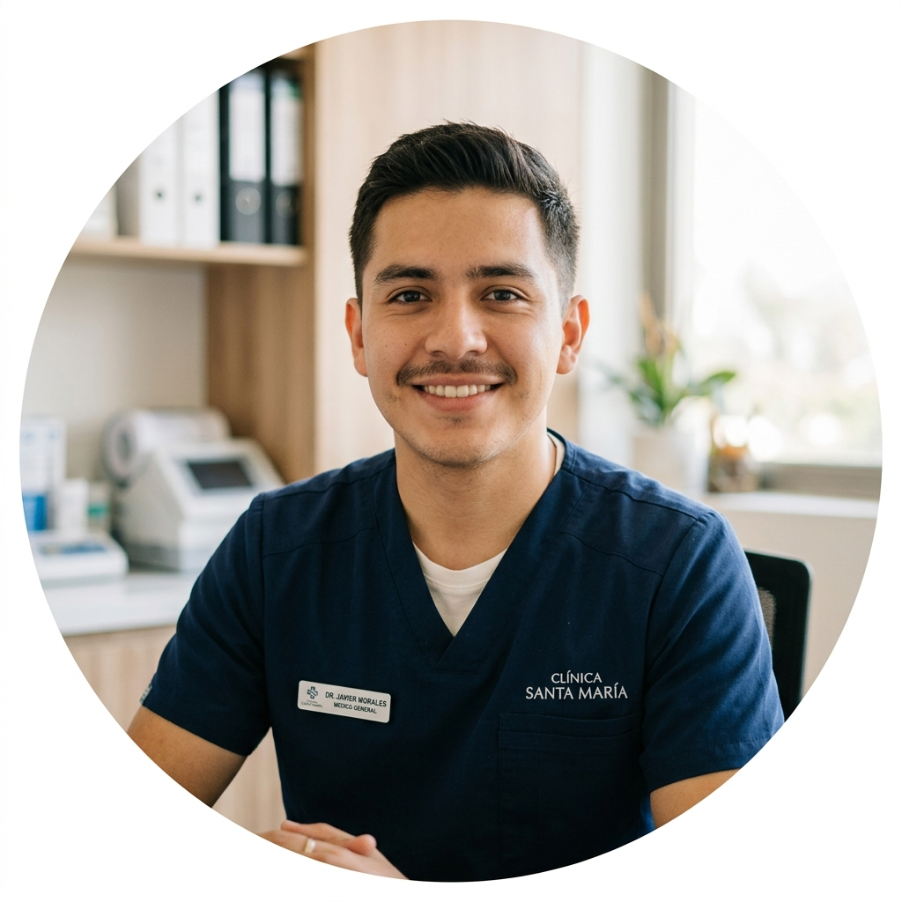

Más que un tratamiento médico, una renovación total para el motor de tu cuerpo. Quiropodía elite, pie diabético, biomecánica y cirugía ungueal con tecnología de vanguardia.
En Podología Profesional, entendemos que tus pies son el motor fundamental de tu día a día. Nuestro equipo combina la máxima precisión médica con un entorno de relajación absoluta, devolviéndote la libertad de moverte sin molestias.
“La salud integral comienza desde la base, y nosotros perfeccionamos cada paso de esa base.”
Procedimientos clínicos de máxima precisión realizados bajo estrictos protocolos de bioseguridad
Eliminación profunda de durezas, helomas y tratamiento ungueal con acabado médico y estético insuperable.
Análisis digital computarizado de la pisada para optimizar el rendimiento y prevenir lesiones articulares.
Tratamiento indoloro y definitivo para onicomicosis con tecnología fototérmica de última generación.
Evaluación neurológica y vascular rigurosa con curaciones especializadas para proteger la integridad del paciente.
Detección y corrección temprana de alteraciones en la marcha (pie plano, cavo) para un crecimiento sano.
Solución definitiva y ambulatoria para uña enterrada (onicocriptosis) con recuperación rápida sin dolor.
Un proceso protocolizado diseñado para tu confort absoluto y resultados médicos definitivos
Ambiente de relajación, valoración de signos y diagnóstico clínico inicial.
Evaluación dermatológica y biomecánica con tecnología digital precisa.
Procedimientos indoloros con instrumental estéril de grado hospitalario.
Plan de mantenimiento preventivo y seguimiento personalizado continuo.
“Soy paciente diabética y necesitaba un cuidado extremadamente profesional para mis pies. El servicio fue atento, seguro y meticuloso. Me brindaron confianza desde el primer minuto.”

“Después de probar varias clínicas, por fin encontré un lugar donde verdaderamente entienden de biomecánica. El tratamiento fue 100% efectivo y el seguimiento médico, insuperable.”
“Llegué con dolor agudo por una uña encarnada y salí caminando sin ninguna molestia. Procedimiento indoloro, ambiente limpio y trato cálido. ¡Recomiendo Podología Profesional ampliamente!”
Instalaciones médicas totalmente equipadas, confortables y de fácil acceso